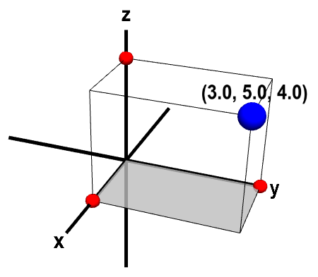
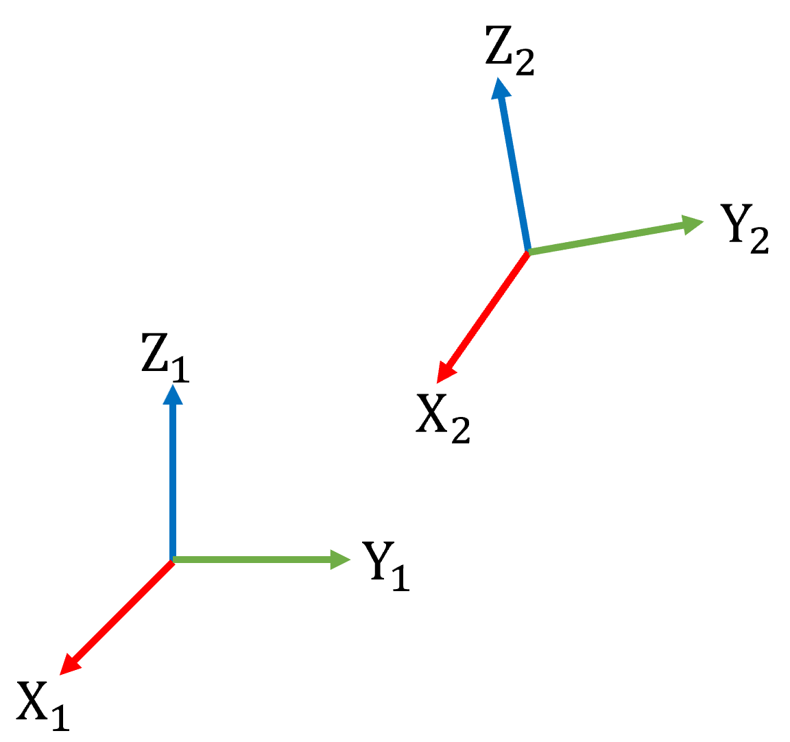
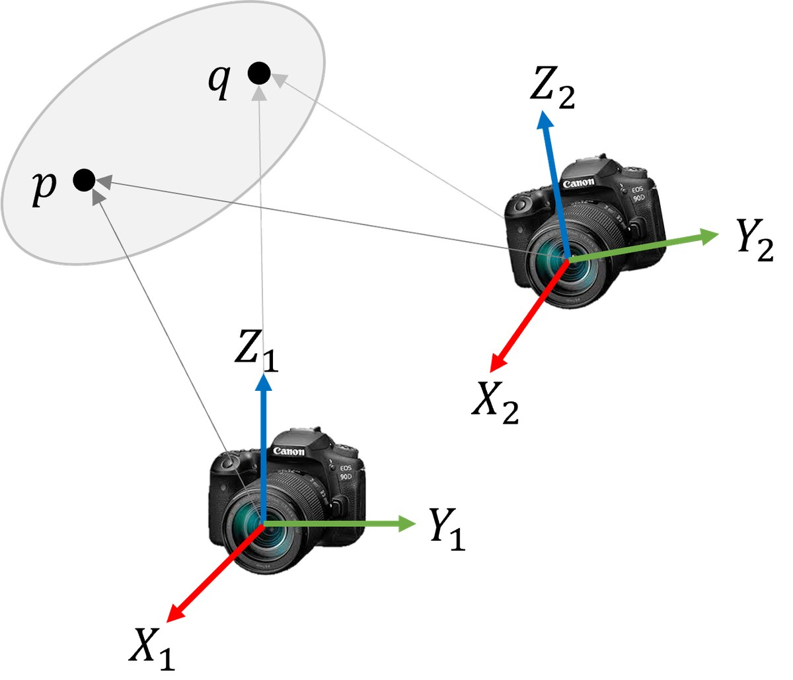
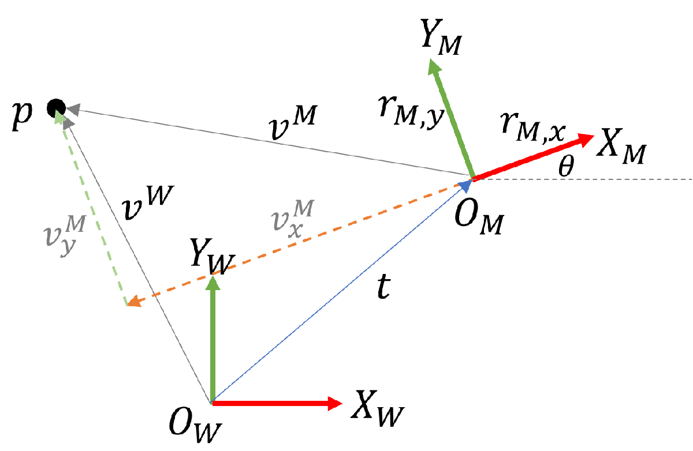
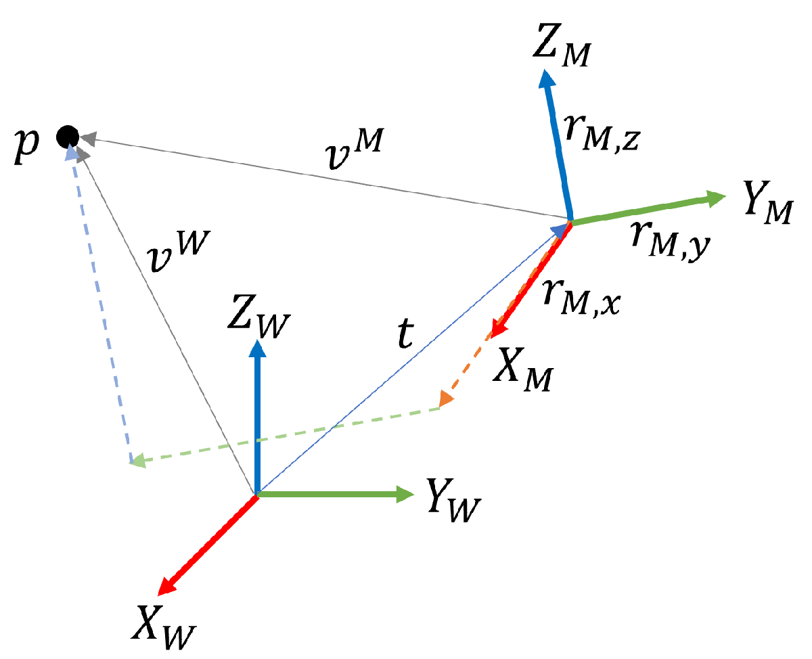
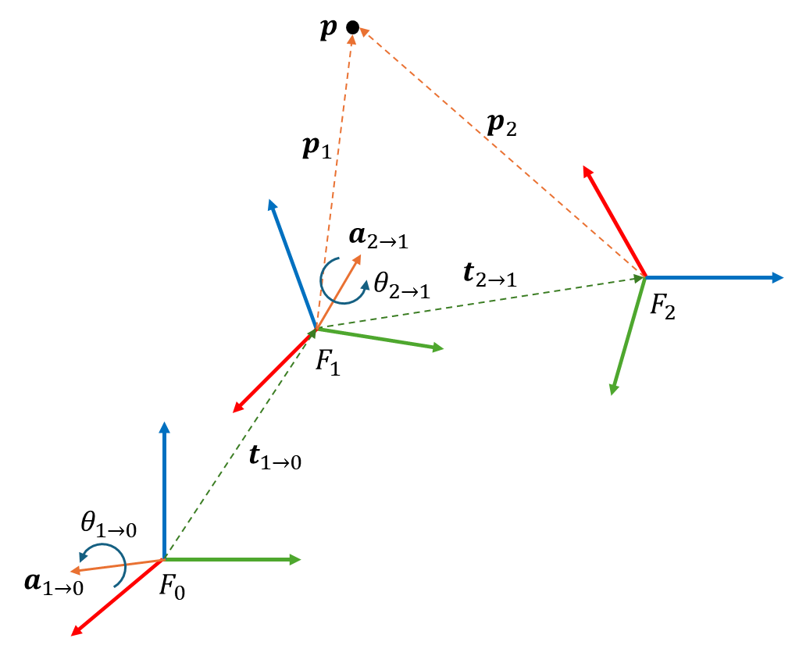
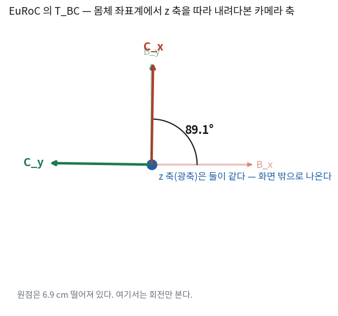

오늘 다루는 수학은 어렵지 않다. 회전행렬과 4×4 행렬 곱이 전부다.
그런데 이 회차가 1부에서 가장 중요하다. 이유는 수학이 어려워서가 아니라,
여기서 틀리면 학기 끝까지 틀린 줄 모르기 때문이다.
궤적은 90° 돌아간 채로 여전히 그럴듯한 곡선을 그린다. 프로그램은 죽지 않는다.
그래서 오늘의 산출물은 정리 하나가 아니라 문서 한 장이다.
config/conventions.md — 학기 내내 에이전트에게 같이 던져 줄 파일이다.
⑦절에 그대로 복사해 쓸 수 있는 초안이 있다.
한 장 요약 — 규약 여섯 줄 학기 내내 본다
본문을 다 못 읽어도 이 표만 남으면 이 회차는 성공이다.
정하는 것
이 강의의 선택
다르게 정해도 되나
아래첨자 순서
T_WB = 「월드에서 본 몸체」. 곱하면 p_W = T_WB · p_B
된다. 섞지만 않으면
몸체 프레임
IMU와 같다. EuRoC imu0의 T_BS가 단위행렬이다
이 데이터셋에서는 선택의 여지가 없다
카메라 축
+z 광축 · +x 오른쪽 · +y 아래 (OpenCV 관례)
된다. 다만 OpenCV를 쓸 거면 이게 편하다
중력
g_W = (0, 0, −9.81), z축이 위
EuRoC이 그렇게 생겼다
쿼터니언
Hamilton (3회에서 자세히)
JPL도 된다. 논문마다 다르다는 걸 알아야 한다
시각
int64_t 나노초. double 초로 바꾸지 않는다
바꾸면 밀리초가 조용히 어긋난다 — ⑨절
해석: 오른쪽 열이 「된다」로 채워져 있는 것에 주목한다.
대부분은 옳고 그름의 문제가 아니라 약속의 문제다.
문제가 되는 것은 잘못 고른 것이 아니라 정하지 않은 채 시작하는 것이다.
정하지 않으면 파일마다 다른 약속이 들어가고, 그것들이 서로를 상쇄해서
겉보기에는 아무 문제가 없어 보인다.
① 점 · 좌표 · 벡터 — 셋이 다르다
같은 말처럼 쓰이지만 다르다. 그리고 이 차이가 오늘 나머지 전부의 바탕이다.
무엇
뜻
어디에 사나
점 (point)
공간의 한 위치. 누가 어디서 보든 그 위치 자체는 하나다
\(p \in \mathbb{E}^3\)
좌표 (coordinates)
그 점을 어떤 좌표계에서 숫자 셋으로 적은 것. 좌표계 없이는 존재하지 않는다
\(v \in \mathbb{R}^3\)
벡터 (vector)
두 점의 차. 원점이 어디인지와 무관하다
\(v = p - q \in \mathbb{R}^3\)

점은 하나인데, 좌표는 좌표계를 정한 뒤에야 생긴다.
해석: 「점과 좌표는 사실상 같은 말 아닌가」 싶지만, 이 구별이
오늘 뒤에서 실제로 값을 바꾼다. ⑤절에서 점과 방향 벡터가 다르게 변환된다는
사실이 나오는데, 그 근거가 이 표의 마지막 줄이다 —
벡터는 원점과 무관하므로 이동에 영향을 받지 않는다.
구별하지 않으면 속도나 중력 벡터에 이동을 더하는 버그를 만들게 된다.
내적과 외적 — 오늘 쓸 도구 둘
두 벡터로 할 수 있는 곱이 둘 있고, 오늘 둘 다 쓴다.
하나는 길이와 각도를 재고, 다른 하나는 방향(orientation)을 정한다.
$$
\langle u, v \rangle = u \cdot v = u^\top v = u_1v_1 + u_2v_2 + u_3v_3 \;\in\; \mathbb{R}
$$
외적을 행렬 곱으로 바꿔 쓴 것이다. \([u]_\times v = u \times v\)이고,
전치하면 부호가 뒤집힌다(\([u]_\times^\top = -[u]_\times\)).
여기서는 외적이 선형 연산이라는 사실을 드러내는 데 썼다.
3회의 로드리게스 공식과 5회의 Essential 행렬이 전부 이 표기로 쓰여 있다.
\(\mathbb{E}^3\) · \(\mathbb{R}^3\)
앞은 점이 사는 공간(유클리드 공간), 뒤는 좌표가 사는 공간(실수 셋).
기호를 나눠 쓰는 이유가 위 표의 첫 두 줄이다.
② 직교 좌표계 — 원점 하나와 기저 벡터 셋
「직교 좌표계」를 정의한다는 것은 원점 하나와 축 방향 셋을 정하는 것이다.
축 방향을 나타내는 벡터를 기저 벡터(basis vector)라고 하고, 두 조건을 만족해야 한다.
조건
식
뜻
정규직교 (orthonormal)
\(v_i \cdot v_k = \begin{cases}1 & i = k \\ 0 & i \ne k\end{cases}\)
점 하나는 기저 벡터 셋의 선형결합이다 —
\(\mathbf{p} = p_1\mathbf{v}_1 + p_2\mathbf{v}_2 + p_3\mathbf{v}_3\).
그 계수 \((p_1,p_2,p_3)\)가 곧 좌표다.
기저가 정규직교이면 좌표를 내적으로 바로 뽑을 수 있다. 이것이 정규직교를 요구하는 실용적인 이유다.
$$
p_i = \mathbf{v}_i \cdot \mathbf{p}
$$
절대적인 기준 좌표계는 없다 🔴

1번 좌표계에서 보면 2번의 원점은 \((0,0,0)\)이 아니다.
그런데 2번에서 보면 1번이 그렇다. 어느 쪽도 특별하지 않다.
한 좌표계를 정하고 나면 그 좌표계 안에서 원점은 당연히 \((0,0,0)\)이고 기저 벡터는 축 그 자체다.
그런데 다른 좌표계에서 보면 달라진다.
그리고 어느 좌표계가 절대적인 기준인지를 정할 방법은 없다.
팽창하는 우주에 절대 원점도 없고 상하좌우도 없다.
해석: 이 문장이 이 강의 전체의 전제다.
유클리드 공간은 하나인데 그것을 표현하는 좌표계는 무한히 많다.
그래서 SLAM에서 「위치」라고 말할 때는 반드시 어느 좌표계에서 본 것인지를 함께 말해야 하고,
그것을 말하지 않아도 되게 만드는 장치가 ⑦절의 표기 규약이다.
13회의 게이지 자유도(gauge freedom)도 결국 이 이야기다 —
월드 좌표계를 어디에 둘지는 정해지지 않으며, 우리가 정하는 것이다.
③ 강체 변환이 보존하는 것 — 그리고 왜 뒤집기를 빼는가

같은 두 점 \(p, q\)를 두 카메라가 본다. 좌표는 서로 다르다.
그런데 \(p\)와 \(q\) 사이의 거리는 같다 — 그 사실이 오늘 유도의 출발점이다.
카메라가 움직여도 물체의 두 점 사이 거리는 변하지 않는다. 식으로 쓰면 이렇다.
$$
\lVert g(u) - g(v) \rVert = \lVert u - v \rVert \qquad \forall u, v
$$
이 조건을 만족하는 변환을 유클리드 변환(Euclidean transformation)이라 하고, 집합을 \(\mathbf{E}(3)\)로 쓴다.
그런데 거리만 보존하는 변환 중에는 시점 변환으로는 절대 만들 수 없는 것이 하나 있다.
뒤집기(reflection)다. \((X, Y, Z) \mapsto (X, Y, -Z)\)는 거리를 그대로 두지만,
아무리 걸어 다녀도 세상이 그렇게 보이는 자리는 없다.
물체를 뒤집으면 위아래만이 아니라 좌우도 같이 뒤집힌다.
뒤집기를 걸러내는 조건이 외적을 보존하는가다. ②절의 오른손 방향 조건이 여기서 회수된다.
$$
g(u) \times g(v) = g(u \times v)
$$
거리에 더해 이 조건까지 만족하는 변환을 강체 변환(rigid-body motion), 또는
특수 유클리드 변환(special Euclidean transformation)이라고 한다.
「special」이 붙은 것이 「방향을 보존한다」는 뜻이다.
🆕 이 절에서 처음 나오는 기호
\(\mathbf{O}(3) = \{ R \mid R^\top R = I \}\)
열이 서로 수직이고 길이가 1인 3×3 행렬 전부(직교행렬). 뒤집기가 아직 섞여 있다.
\(\mathbf{SO}(3) = \{ R \mid R^\top R = I,\ \det R = 1 \}\)
거기서 뒤집기를 뺀 것. 이것이 우리가 말하는 「회전」이다.
\(\det R = -1\)인 것이 뒤집기다.
\(\mathbf{E}(3)\) · \(\mathbf{SE}(3)\)
회전에 이동을 붙인 것. 앞은 뒤집기 포함, 뒤는 제외다.
이 강의에서 자세(pose)라고 부르는 것이 전부 \(\mathbf{SE}(3)\)다.
\(\mathbf{SO}(3)\)를 「군(group)」으로 다루는 이야기는 3회 ⑦절에서 한다. 오늘은 집합으로만 본다.
정리하면 조건이 붙을수록 집합이 좁아진다.
변환 종류
보존하는 것
회전 부분
이 강의에서
어파인 변환
직선을 직선으로
\(R \in \mathbb{R}^{3\times3}\)
안 쓴다
유클리드 변환 \(\mathbf{E}(3)\)
+ 거리
\(R \in \mathbf{O}(3)\)
뒤집기가 섞여 있어 안 쓴다
강체 변환 \(\mathbf{SE}(3)\)
+ 방향
\(R \in \mathbf{SO}(3)\)
이것만 쓴다
⚠️ \(\det R = 1\) 조건은 실전에서 생각보다 자주 걸린다
SVD로 회전을 구하는 알고리즘 — 5회의 에피폴라 분해, 9회의 궤적 정렬, ②절의 재직교화 —
에서 부호를 안 맞추면 \(\det R = -1\)인 행렬이 그대로 나온다.
그 상태로도 프로그램은 돌고, 재구성된 점들이 카메라 뒤에 생긴다.
「점이 하나도 안 보인다」는 증상이 나오면 여기부터 본다.
④ 변환식을 유도한다 — 2차원부터
「좌표계 사이의 관계는 회전과 이동 두 가지로 정의된다」는 말을 자주 하는데,
왜 그 둘이면 충분한지는 유도해 보면 바로 보인다. 2차원부터 시작한다.

W의 원점에서 파란 실선을 따라 M의 원점으로 가고,
거기서 M의 축을 따라 \(v^M\)의 두 성분만큼 가면 \(p\)에 닿는다.
「그렇게 가면 도착한다」를 그대로 식으로 옮긴 것이 아래다.
M 좌표계에서 본 점 \(p\)의 좌표가 \(\mathbf{v}^M = (v^M_x, v^M_y)\)라는 말은,
M의 축 방향으로 그만큼씩 갔다는 뜻이다.
같은 이동을 W에서 보려면 M의 축을 W에서 본 방향을 알아야 한다.
그것이 \(\mathbf{r}^W_{M,x}, \mathbf{r}^W_{M,y}\)다.
해석:회전행렬의 각 열이 「상대 좌표계의 축을 내 좌표계에서 본 것」이다.
이 한 문장이 나중에 부호를 헷갈릴 때마다 되돌아올 자리다.
R_WB의 첫 열은 「몸체의 x축을 월드에서 본 방향」이고, 그 이상도 이하도 아니다.
회전행렬을 외울 것이 아니라 이 문장을 외운다.
2차원 회전행렬을 각도로 쓰면 이렇게 되고, 두 열이 수직이고 길이가 1이므로
\(R^\top R = I\)가 따라 나온다. 그래서 전치가 곧 역행렬이다.
$$
R = \begin{bmatrix} \mathbf{r}_x & \mathbf{r}_y \end{bmatrix}
= \begin{bmatrix} \cos\theta & -\sin\theta \\ \sin\theta & \cos\theta \end{bmatrix},
\qquad R^\top R = I, \qquad R^{-1} = R^\top
$$
3차원은 열이 하나 늘어날 뿐이다

같은 점 p인데 좌표가 둘이다.
2차원 식에 열과 성분이 하나씩 늘어난 것 말고는 달라지는 것이 없다.
$$
\mathbf{v}^W = v^M_x\,\mathbf{r}^W_{M,x} + v^M_y\,\mathbf{r}^W_{M,y} + v^M_z\,\mathbf{r}^W_{M,z} + \mathbf{t}
= R\,\mathbf{v}^M + \mathbf{t}
$$
이것이 질문 2의 답이다. 좌표계 사이의 관계를 정하려면
원점이 어디인지(이동)와 축이 어느 방향인지(회전)만 알면 되고,
그 둘 말고 더 필요한 것이 없다. 기저가 정규직교라서 스케일도 기울기도 자유도가 없기 때문이다.
이동 \(t\)가 사라진다. 회전만 먹는다.
그리고 이것이 ①절에서 점과 벡터를 구별한 이유다 —
벡터는 두 점의 차라서 원점이 어디로 가든 영향을 받지 않는다.
무엇
마지막 칸
어떻게 변환되나
이 프로젝트에서의 예
점 (위치)
1
\(R\mathbf{p} + t\)
랜드마크 좌표, 카메라 위치
방향 벡터
0
\(R\mathbf{v}\) — 이동 없음
중력 \(g_W\), 속도 \(v_W\), 각속도, 광선 방향
⛔ 속도나 중력에 이동을 더하는 것
이 강의에서 실제로 자주 나오는 버그다. 자세를 바꿔 주는 함수 하나를 만들어 놓고
속도 벡터에도 그대로 쓰면, 속도에 카메라 위치가 더해진다.
값이 커지긴 하는데 발산하지는 않아서, 「필터가 조금 이상하다」로만 보인다.Sophus::SE3d의 operator*는 점으로 취급하므로
방향 벡터에는 .so3() * v 또는 .rotationMatrix() * v를 쓴다.
11회에서 속도를 상태에 넣을 때 이 구별이 그대로 필요해진다.
⑥ 좌표계 사슬 — 아래첨자가 지워지도록 쓴다
표기를 이렇게 정하면 사슬이 손으로 확인된다.
$$
T_{WC} = T_{WB}\, T_{BC}
$$
해석:아래첨자가 사슬처럼 이어진다 —
W←B와 B←C를 곱하면 W←C가 된다.
가운데 B가 「지워진다」고 외우면 곱하는 순서를 틀릴 일이 거의 없다.
이것이 표기 규약을 이렇게 정하는 진짜 이유다. 예뻐서가 아니라 손이 덜 틀려서다.

좌표계가 셋 이상이 되면 사슬이 길어진다.
화살표 방향과 아래첨자 순서가 맞는지만 보면 된다.
이 그림은 8회 중간고사에도 그대로 나온다.
passive와 active — 같은 행렬의 두 가지 읽기 🔴
\(T\)를 곱하는 동작에는 서로 다른 두 가지 해석이 있다.
같은 행렬인데 무엇을 하고 있다고 생각하느냐가 다르다.
해석
무엇을 한다고 보나
이 강의에서
passive (좌표 변환)
점은 가만히 있고 좌표계가 바뀐다.
같은 점을 다른 좌표계에서 본 좌표를 구한다
기본이다. \(p_W = T_{WB}\,p_B\)가 이 읽기다
active (점 이동)
좌표계는 그대로고 점이 움직인다.
\(T\)만큼 옮긴 새 점의 좌표를 구한다
합성 데이터를 만들 때, 물체를 배치할 때
해석: 헷갈리는 이유는 식이 똑같기 때문이다. 둘 다 \(T\mathbf{p}\)다.
그런데 같은 상황을 두 해석으로 쓰면 서로 역이 된다 —
「좌표계를 왼쪽으로 옮긴 것」과 「점을 오른쪽으로 옮긴 것」이 같은 결과이기 때문이다.
규약 문서에 「\(T_{WB}\)는 passive다」라고 한 줄 적어 두는 것이
나중에 「왜 역행렬을 곱해야 하지」로 헤매는 30분을 아낀다.
자세(pose)와 변환(transform)은 같은 것이다
T_WB를 「몸체의 자세」라고도 하고 「B에서 W로 가는 변환」이라고도 한다.
같은 행렬이다. 이유는 이렇다 —
「몸체의 자세」란 곧 「몸체 좌표계의 원점과 축을 월드에서 본 것」이고,
그것이 바로 ④절에서 본 \(t\)와 \(R\)의 열이다.
\(T_{WB}\)를 이렇게 부른다
같은 뜻
월드에서 본 몸체의 자세
몸체 좌표계의 원점과 축을 월드 좌표로 적은 것
B에서 W로 가는 변환
\(p_W = T_{WB}\,p_B\)
몸체 좌표계의 위치와 방향
\(t_{WB}\)와 \(R_{WB}\)
⑦ 규약 여섯 개를 문서로 못박는다 사람이 한다
지금까지 나온 것을 파일 하나로 적어 둔다. 이름은 config/conventions.md이고,
학생이 직접 만드는 파일이다. 이 파일은 세 가지 일을 한다.
언제 쓰나
무엇을 하나
코드를 의뢰할 때
매번 함께 첨부한다. 에이전트는 대화가 바뀌면 지난번 약속을 모른다
결과가 이상할 때
코드가 이 파일과 어긋난 곳을 먼저 찾는다. 진단의 출발점이다
설계문서를 쓸 때
이 파일이 설계문서 1장이 된다. 학기 말에 무엇이 왜 바뀌었는지를 여기서 센다
뼈대는 이 정도면 된다. 길게 쓸 필요가 없고, 애매한 문장이 없는 것이 중요하다.
# conventions.md — mvins 표기 규약 (v1, 2주차)
## 좌표계
W : 월드. EuRoC Vicon 방 기준. z축이 위. g_W = (0, 0, -9.81)
B : 몸체. IMU 와 같다 (imu0 의 T_BS = I)
C : 카메라 cam0. +z 광축, +x 오른쪽, +y 아래 (OpenCV 관례)
## 표기
T_WB : 월드에서 본 몸체. p_W = T_WB * p_B ← passive 해석이다
합성 : T_WC = T_WB * T_BC ← 가운데 첨자가 지워진다
역 : T_WB.inverse() 를 쓴다. 손으로 전치하지 않는다
## 점과 방향
점(위치) : T * p 이동이 들어간다
방향 벡터 : T.so3() * v 이동이 들어가지 않는다
(중력, 속도, 각속도, 광선 방향이 전부 여기다)
## 쿼터니언
Hamilton. 코드 안에서는 Sophus::SO3d 만 쓴다.
파일 입출력에서만 순서를 신경 쓴다 — EuRoC GT 는 (w,x,y,z), TUM 궤적은 (x,y,z,w)
## 시각
int64_t 나노초. double 초로 바꾸지 않는다.
뺄셈은 정수로 하고, 나눌 때만 실수로 바꾼다.
## 아직 정하지 않은 것
- perturbation 방향 (3회에서 정한다 → right 로 통일하게 된다)
- 상태 벡터의 구성 (10~11회에서 정한다)
해석: 마지막 「아직 정하지 않은 것」 절이 이 파일에서 두 번째로 중요하다.
정하지 않았다는 사실을 적어 두면 나중에 그 자리를 찾을 수 있다.
적어 두지 않으면 누군가가(대개 에이전트가) 조용히 정해 버리고, 그것이 어디서 정해졌는지 아무도 모른다.
⛔ 규약을 정하지 않고 코드를 시작하는 것
이 프로젝트가 가장 오래 헤매는 경로다. 틀려도 프로그램이 죽지 않기 때문이다.
궤적은 90° 돌아간 채 그럴듯하게 나오고, ATE만 크게 찍힌다.
그리고 그 ATE 숫자는 원인에 대해 아무것도 말해 주지 않는다.
⑧ EuRoC의 좌표계 전부 — 그리고 T_BC가 하는 일 맡기되 검사한다
EuRoC은 센서 폴더마다 sensor.yaml에
T_BS(몸체에서 본 그 센서)를 적어 준다. 우리가 다루는 좌표계는 이렇게 생겼다.
기호
무엇
이 데이터셋에서
이 강의에서 쓰나
W
월드
Vicon 방 좌표계. z축이 위
쓴다. 모든 것의 기준
B
몸체
IMU와 같다.imu0의 T_BS = I
쓴다. 상태가 여기 붙는다
C
cam0 (왼쪽 카메라)
T_BS가 아래 값
쓴다. 단안이므로 이것만
C1
cam1 (오른쪽 카메라)
기선 약 11 cm
안 쓴다 — 단안 프로젝트다
V
Vicon 마커
vicon0의 원시 측정
안 쓴다. 정답은 아래 것을 쓴다
—
state_groundtruth_estimate0
이미 몸체 기준으로 정리된 정답. 자세·속도·바이어스
쓴다. 4회부터 검증에 계속
🆕 EuRoC 파일에서 처음 나오는 이름
sensor.yaml의 T_BS
몸체(body)에서 본 그 센서(sensor)의 자세. 우리 표기로는 그대로 \(T_{BC}\)다 —
cam0 폴더의 S가 곧 C이기 때문이다. 파일에는 행 우선 16개 숫자로 적혀 있다.
imu0/sensor.yaml의 T_BS
단위행렬이다. 그래서 이 데이터셋에서는 몸체 = IMU이고,
외부 파라미터 사슬이 하나 줄어든다. 여기서는 그 사실을 규약으로 못박는 데 썼다.
state_groundtruth_estimate0/
정답 궤적이 든 폴더. 자세뿐 아니라 속도와 IMU 바이어스까지 들어 있다.
「속도」가 들어 있다는 것이 ⑤절의 「방향 벡터」 이야기와 바로 이어진다 —
이 값을 다른 좌표계로 옮길 때 이동을 더하면 안 된다.
회전 부분만 떼어 축과 각으로 바꿔 보면 무엇인지가 분명해진다.
(3회에서 배울 변환이다. vision-slam/src/rotation_numbers.py가 계산한 값이다.)
회전축 = (−0.0110, 0.0150, 0.9998) ← 거의 z 축이다
회전각 = 89.16°
원점 거리 = 6.9 cm

z축(광축)은 둘이 같고, 어긋난 것은 영상의 x·y축이다.
이게 이 변환을 빠뜨렸을 때 특히 안 들키는 이유다 —
카메라가 보는 방향은 맞고, 영상 안에서 어느 쪽이 오른쪽인지만 90° 돌아간다.
해석: 6.9 cm는 작아 보이지만 무시할 수 없다.
이 방에서 흔한 깊이가 3 m이고, 삼각측량에 필요한 기선이 20 cm 정도다(5회).
기선의 3분의 1이 되는 크기를 무시하면 재구성이 틀어진다.
그리고 회전 쪽이 더 나쁘다 — 90° 어긋난 채로도 궤적은 매끄럽게 나온다.
🧪 이 회차의 실습 — 두 궤적을 둘 다 그려 본다
① 무엇을 알게 되나 — 틀린 변환이 얼마나 그럴듯하게 보이는지.
「그림만 봐서는 모르겠다」가 오늘 얻어 갈 감각이고,
그래서 ⑦절의 규약 문서가 필요하다는 결론으로 이어진다.
② 준비물 — 1주차에 만든 로더, 정답 궤적, 그림 그리는 파이썬 스크립트.
정답 궤적 \(T_{WB}\)를 읽어 카메라 궤적을 두 벌 만든다 — 하나는 \(T_{WB}T_{BC}\), 다른 하나는 \(T_{WB}\) 그대로. (15분)
둘을 같은 3차원 화면에 다른 색으로 그린다. (10분)
두 궤적의 위치 차이를 프레임마다 재서 최댓값과 평균을 찍는다. (5분)
세 번째 궤적을 하나 더 만든다 — \(T_{BC}\)를 역방향으로 곱한 것
(\(T_{WB}T_{BC}^{-1}\)). 이것도 그럴듯한가? (10분)
④ 이렇게 되면 성공이다 — 세 궤적이 전부 그럴듯한 곡선으로 보이고,
1번과 2번의 위치 차이가 6.9 cm 근처에서 오르내린다.
숫자로는 갈리는데 눈으로는 안 갈린다는 것이 이 실습의 결론이다.
⑨ 시각 — 나노초 정수로만 다룬다
EuRoC의 시각은 이렇게 생겼다.
1403715273262142976
19자리 정수, 단위는 나노초다. 이것을 double에 넣으면 어떻게 되나.
double은 유효숫자가 약 15~16자리다.
19자리를 담으려면 뒤쪽 몇 자리를 버려야 한다.
어떻게 다루나
표현할 수 있는 가장 작은 간격
결과
int64_t 나노초
1 ns
정확하다
double 나노초
약 256 ns
IMU 주기 5 ms에 비하면 아직 작다
double초로 바꾸면
약 0.24 µs
이것도 작아 보인다. 문제는 다음 줄이다
초로 바꾼 값끼리 빼면 — 큰 수에서 큰 수를 빼므로 유효숫자가 통째로 날아간다.
사전적분 구간 \(\Delta t\)를 이렇게 구하면 구간마다 오차가 다르게 들어간다
해석: 위험한 것은 「시각이 부정확해진다」가 아니라
「구간마다 다르게 부정확해진다」이다.
일정하게 틀리면 바이어스처럼 추정으로 흡수되지만, 들쭉날쭉 틀리면 잡음처럼 보인다.
그리고 잡음처럼 보이는 것은 잡음 파라미터를 키워서 덮게 된다 — 원인은 남는다.
권하지 않는다의 전형적인 모양이다.
빼는 것은 정수로 하고, 나눌 때만 실수로 바꾼다.
using Timestamp = int64_t; // 나노초
double dt = (t1 - t0) * 1e-9; // 뺄셈은 정수로, 나눗셈에서만 실수로
그리고 EuRoC이 고마운 조건을 하나 준다. 시각이 흔들리지 않는다.
잰 것
결과
영상 간격
평균 50.000 ms · 최소 50.000 · 최대 50.000
IMU 간격
평균 5.000 ms · 최소 5.000 · 최대 5.000
영상 한 장 사이의 IMU 샘플 수
정확히 10개
첫 영상 시각과 첫 IMU 시각
같다 (1403715273262142976 ns)
정답 궤적이 시작하는 시각
첫 영상보다 1.040초 늦다 — 그 앞은 정답이 없다
해석: 흔들림이 0.000 ms다. 하드웨어 동기가 이 정도로 깨끗한 데이터셋은 드물고,
그래서 이 강의는 시간 오프셋 추정을 구현하지 않아도 된다. 한 학기를 벌어 주는 조건이다.
마지막 줄은 반대로 함정이다 — 앞 1.040초를 정답이 있는 것처럼 다루면
첫 프레임부터 아무것도 안 맞는다.
🤖 의뢰서 — 규약을 코드로 옮긴다 맡기되 검사한다
좌표계 변환 유틸은 짧지만 부호를 틀리기 아주 쉬운 코드다.
그래서 의뢰서에 [검증] 칸을 먼저 채운다.
[규약] 첨부한 conventions.md의 표기를 그대로 따라 줘.
특히 T_WB는 「월드에서 본 몸체」이고 p_W = T_WB * p_B다.
방향 벡터에는 이동을 더하지 말아 줘 — 회전만 적용한다.
[인터페이스]DataSource에
Sophus::SE3d T_BC() const을 구현해 줘.
cam0/sensor.yaml의 T_BS를 읽어 그대로 돌려주면 된다.
그리고 정답 궤적을 카메라 자세로 바꾸는 함수와,
정답 속도를 다른 좌표계로 옮기는 함수를 하나씩 더 만들어 줘.
[검증] 아래 다섯 시험을 같이 써 줘. 기준을 넘으면 실패로 출력한다.
① T_WB * T_WB.inverse()가 단위행렬인가 — 성분 최대 오차 1e-12
② 읽어 들인 R_BC가 RᵀR = I, det R = 1인가 — 1e-9
③ R_BC를 축-각으로 바꿨을 때 각이 89.16° ± 0.05°, 축이 z에 가까운가
④ 방향 벡터 변환에 이동이 안 들어갔는가 —
같은 벡터를 원점이 다른 두 자세로 옮겼을 때 결과가 같아야 한다 (1e-12)
⑤ 영상 한 장 사이 IMU 샘플 수가 정확히 10개인가 실패하면 계산된 값을 함께 찍어 줘.
[함정]sensor.yaml의 T_BS는 행 우선 16개 숫자로 적혀 있다.
Eigen의 기본은 열 우선이라 그대로 Map하면 전치된 행렬이 된다.
시각은 int64_t 나노초로만 다루고 뺄셈을 정수로 해 줘.
[남긴다] 규약에 없어서 임의로 정한 것이 있으면 코드 맨 위에 목록으로 적어 줘.
받은 코드에서 확인할 것 — 여섯 줄 다 눈으로 확인할 수 있는 것이다.
□ T_BC 가 전치돼 들어오지 않았는가 ← 축-각이 89.16° 로 나오면 맞다
□ 궤적을 카메라 자세로 바꿀 때 T_WB * T_BC 인가, T_BC * T_WB 인가
□ 역변환에 .inverse() 를 썼는가, 손으로 전치했는가
□ 속도 변환에 이동이 들어가지 않았는가 ← 시험 ④가 이것을 잡는다
□ 요구한 시험 다섯 개가 실제로 있고 돌려 봤는가
□ 임의로 정한 것 목록에 내가 동의하지 않는 항목이 있는가
그리고 결과가 이상할 때. 「고쳐 줘」라고 하지 않는다.
카메라 궤적이 정답 궤적에 대해 전체가 90° 돌아간 것처럼 보인다. 모양은 같다.
T_BC의 회전각은 89.16°로 맞게 읽혔고, RᵀR = I 시험도 통과한다. 원인 후보를 세 개 대고, 각각을 확인할 수 있는 가장 작은 실험을 하나씩 제안해 줘.
코드는 아직 고치지 말아 줘.
해석: 이 증상은 오늘 배운 것 안에 원인이 다 있다 —
곱하는 순서(⑥절), 역방향(⑤절), 전치(⑧절 함정).
세 후보를 스스로 댈 수 있으면 이 회차는 끝난 것이다.
🧪 오늘 만든 것이 맞는지 어떻게 아나 사람이 한다
오늘은 검증 사다리 1단(항등식 검사)만 쓴다.
수식이 성립하는지를 보는 시험이고, 통과 기준이 전부 기계 정밀도 근처다.
단
시험
통과 기준
여기서 걸리는 것
1
RᵀR = I
성분 최대 오차 < 1e-12
읽기 실수, 정규화 누락
1
det R = 1
< 1e-12
뒤집힌 행렬 (③절)
1
T · T⁻¹ = I
< 1e-12
이동 항에 \(R^\top\)을 안 곱했다
1
왕복 변환 T_BW(T_WB p) = p
< 1e-12
같은 위
1
방향 벡터에 이동이 안 들어가는가
원점이 다른 두 자세에서 결과가 같다 < 1e-12
점과 벡터를 구별하지 않았다 (⑤절)
1
축-각으로 본 R_BC
89.16° ± 0.05°
전치된 채 읽었다
1
영상 사이 IMU 샘플 수
정확히 10
시각 처리, 경계 조건
해석: 앞의 다섯은 어떤 데이터를 넣어도 성립해야 하는 항등식이고,
뒤의 둘은 이 데이터셋의 값이 맞게 들어왔는지를 본다.
항등식만 통과하면 「코드가 제정신이다」까지고,
뒤의 둘까지 통과해야 「데이터를 제대로 읽었다」가 된다. 둘 다 필요하다.
🎨 이 회차의 그림 맡긴다
좌표계 세 개(W·B·C)의 축을 한 화면에 그리고, T_BC를 넣은 것과 뺀 것을 나란히 둔다.
이 그림으로 판정하는 것은 하나다 — 두 판이 둘 다 그럴듯해 보이는가.
그렇다면 오늘의 교훈이 그림으로 확인된 것이다.
시각화 도구로는 Rerun을 쓴다. 좌표계를 경로의 계층으로 등록해 두면
변환을 손으로 곱해 넣지 않아도 축과 영상이 따라 움직인다.
[할 일] 정답 궤적 파일을 읽어 Rerun으로 그리는 파이썬 스크립트를 써 줘.
좌표계를 world / world/body / world/body/cam계층으로 등록하고,
변환을 손으로 곱해 넣지 말아 줘.
T_BC를 켜고 끄는 플래그를 하나 두고, 두 궤적을 다른 색으로 같이 그려 줘.
[검증] 두 궤적의 프레임별 위치 차이를 같이 그려 줘.
평균이 0.069 m 근처가 아니면 화면에 경고를 찍어 줘.
[함정] 시간축은 프레임 번호가 아니라 나노초 타임스탬프로 잡아 줘.
Rerun은 버전마다 함수 이름이 조금씩 다르다 — 설치된 버전을 먼저 확인하고 그 버전의 API로 써 줘.
[남긴다] 쿼터니언 순서를 어디서 어떻게 맞췄는지 주석으로 적어 줘.
받은 코드에서 확인할 것
□ 좌표계를 계층으로 등록했는가, 아니면 매번 월드 좌표로 바꿔 넣었는가
□ z 축이 위로 나오는가 ← 뒤집혀 보이면 규약이 어긋난 것이다
□ 쿼터니언 순서가 (x,y,z,w) 인가 (w,x,y,z) 인가 ← 가장 흔한 실수
□ 시간축이 나노초 타임스탬프인가
□ 두 궤적을 색으로 구별했는가
해석:world/body/cam이라는 경로 자체가 오늘의 좌표계 사슬이다.
T_WC = T_WB · T_BC를 코드로 옮기지 않고 경로로 적은 것이다.
그래서 경로를 잘못 쓰면 그림이 어긋나고, 그 어긋남이 곧 사슬이 틀렸다는 신호가 된다.
✅ 오늘의 점검
조금 더 알아두면 시험 범위 아님
동차좌표의 마지막 칸이 0이면 무엇인가 — 무한히 먼 점
⑤절에서 마지막 칸이 0인 것을 「방향 벡터」라고 불렀다.
사영기하(projective geometry) 쪽에서는 이것을 무한원점(point at infinity)이라고 부른다.
\((\mathbf{v}, w)\)를 \(\mathbf{v}/w\)로 읽는 규칙에서 \(w \to 0\)이면
무한히 멀어지는 점이 되기 때문이다.
두 이름이 같은 것을 가리킨다는 사실이 실제로 쓰이는 자리가 있다.
아주 먼 랜드마크다. 깊이가 크면 삼각측량이 불안정해지는데(5회),
그런 점을 「무한히 먼 점」으로 두고 방향만 추정하면 문제가 잘 정의된다.
역깊이(inverse depth) 파라미터화가 그 아이디어이고, VINS-Mono가 실제로 그렇게 되어 있다.
이 강의에서 구현하지는 않지만, 코드에서 inv_depth를 만나면 이 이야기다.
카메라 좌표계 관례가 라이브러리마다 다르다
규약 표에서 「\(+z\) 광축, \(+y\) 아래」를 골랐는데, 이게 유일한 선택은 아니다.
어디
관례
왜
OpenCV · 이 강의
\(+x\) 오른쪽 · \(+y\) 아래 · \(+z\) 앞
픽셀 좌표 원점이 영상 왼쪽 위라서 \(y\)가 아래를 향한다
OpenGL · Blender
\(+x\) 오른쪽 · \(+y\) 위 · \(-z\) 앞
그래픽스 전통. 광축이 \(-z\)다
ROS (REP-103)
\(+x\) 앞 · \(+y\) 왼쪽 · \(+z\) 위
로봇 본체 기준. 카메라 광학 프레임은 따로 둔다
어느 쪽이 맞는 것이 아니라 분야마다 굳어진 약속이 다른 것이고,
그래서 다른 도구의 결과를 가져올 때 축을 바꾸는 변환을 한 번 끼워야 한다.
ROS는 아예 camera_link와 camera_optical_frame을
따로 두고 그 사이에 고정 변환을 하나 넣어 둔다 — 이 문제를 규약으로 푼 예다.
「몸체 = IMU」가 왜 고마운 조건인가
센서가 여럿 달린 로봇에서는 보통 몸체 프레임을 따로 하나 정하고
센서마다 그 프레임에 대한 변환을 하나씩 들고 다닌다.
카메라가 둘, IMU가 하나면 변환이 셋이고, 그중 하나라도 틀리면 증상은 똑같이
「궤적이 그럴듯한데 틀림」으로 나온다.
EuRoC은 imu0의 T_BS를 단위행렬로 잡아 두었다.
그래서 단안으로 쓰는 우리에게는 변환이 하나뿐이다 — T_BC.
틀릴 수 있는 자리가 셋에서 하나로 줄어든 셈이고,
첫 구현이 살아남는 데 이 조건이 생각보다 크게 기여한다.
(TUM VI는 그렇지 않다. 몸체 프레임이 따로 있다.)
\(T_{BC}\) 같은 값을 외부 파라미터(extrinsic)라고 하고,
카메라 내부의 \(f, c\)를 내부 파라미터(intrinsic)라고 한다(4회).
둘 다 재야 알 수 있는 값이고, 재는 절차가 캘리브레이션이다.
카메라-IMU 외부 파라미터는 체커보드를 들고 흔들면서 잰다.
영상에서 본 자세 변화와 IMU가 잰 자세 변화가 같은 움직임의 두 기록이므로,
둘을 맞추는 변환을 최적화로 푼다. Kalibr가 그 일을 하는 표준 도구다.
이 강의에서는 하지 않는다. EuRoC이 값을 주기 때문이고,
캘리브레이션 자체가 한 학기짜리 주제이기 때문이다. 다만 하나는 알아 둔다 —
이 값에도 오차가 있다. \(T_{BC}\)의 회전이 1° 틀리면 그만큼
재구성이 틀어지는데, ATE에는 그냥 「조금 나쁨」으로만 나타난다.
원인 후보 목록에 캘리브레이션을 넣어 두어야 하는 이유다.
다음 시간(3회)에는 회전 하나만 가지고 100분을 쓴다.
오늘은 \(R\)을 「주어진 것」으로 놓고 곱하기만 했는데,
다음 시간에는 \(R\)을 표현하는 방법 네 가지와
\(R\)을 미분해야 하는 상황을 만난다.
회전행렬은 더할 수 없어서, 미분이 우리가 아는 모양으로 생기지 않는다.